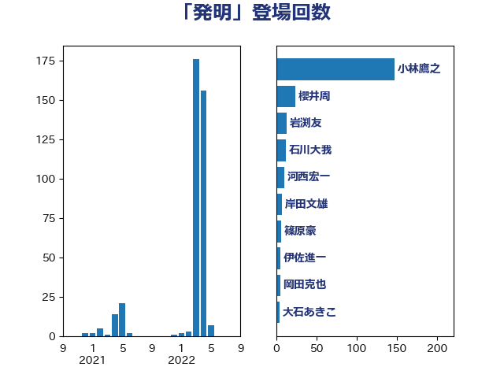

単語「発明」

| 小林鷹之 | 自由民主党 | 147 回 |
| 櫻井周 | 立憲民主党 | 24 回 |
| 岩渕友 | 日本共産党 | 13 回 |
| 石川大我 | 立憲民主党 | 12 回 |
| 河西宏一 | 公明党 | 10 回 |
| 岸田文雄 | 自由民主党 | 7 回 |
| 篠原豪 | 立憲民主党 | 6 回 |
| 伊佐進一 | 公明党 | 5 回 |
| 岡田克也 | 立憲民主党 | 5 回 |
| 大石あきこ | れいわ新選組 | 4 回 |
| 平木大作 | 公明党 | 4 回 |
| 杉尾秀哉 | 立憲民主党 | 4 回 |
| 笠井亮 | 日本共産党 | 4 回 |
| 梶山弘志 | 自由民主党 | 3 回 |
| 礒崎哲史 | 国民民主党 | 3 回 |
| 福島みずほ | 社会民主党 | 3 回 |
| 鈴木義弘 | 国民民主党 | 3 回 |
| ながえ孝子 | 無所属 | 2 回 |
| 塩田博昭 | 公明党 | 2 回 |
| 安達澄 | 無所属 | 2 回 |
| 山本左近 | 自由民主党 | 2 回 |
| 山田賢司 | 自由民主党 | 2 回 |
| 末松信介 | 自由民主党 | 2 回 |
| 森本真治 | 立憲民主党 | 2 回 |
| 菅直人 | 立憲民主党 | 2 回 |
| 三浦信祐 | 公明党 | 1 回 |
| 前原誠司 | 国民民主党 | 1 回 |
| 國重徹 | 公明党 | 1 回 |
| 塩川鉄也 | 日本共産党 | 1 回 |
| 大島敦 | 立憲民主党 | 1 回 |
| 小泉進次郎 | 自由民主党 | 1 回 |
| 山岸一生 | 立憲民主党 | 1 回 |
| 山崎正恭 | 公明党 | 1 回 |
| 工藤彰三 | 自由民主党 | 1 回 |
| 本田顕子 | 自由民主党 | 1 回 |
| 森山浩行 | 立憲民主党 | 1 回 |
| 片山さつき | 自由民主党 | 1 回 |
| 空本誠喜 | 日本維新の会 | 1 回 |
| 萩生田光一 | 自由民主党 | 1 回 |
| 谷田川元 | 立憲民主党 | 1 回 |